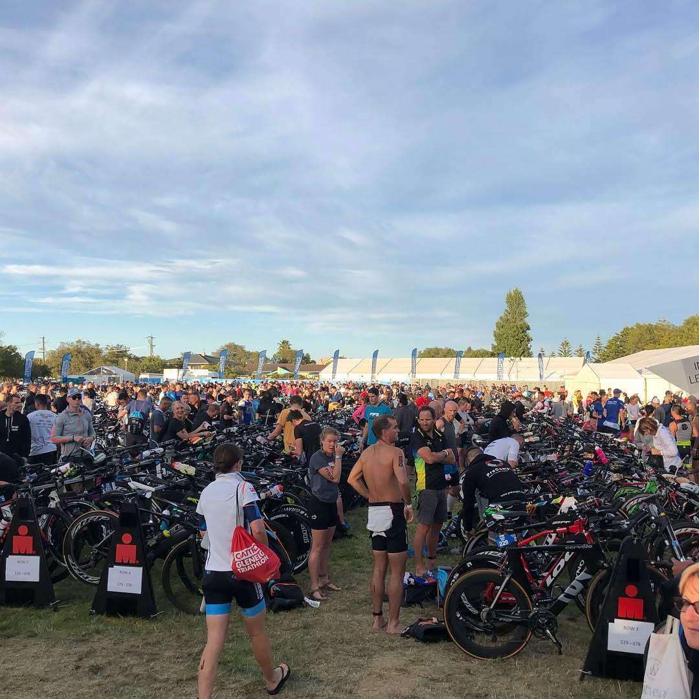
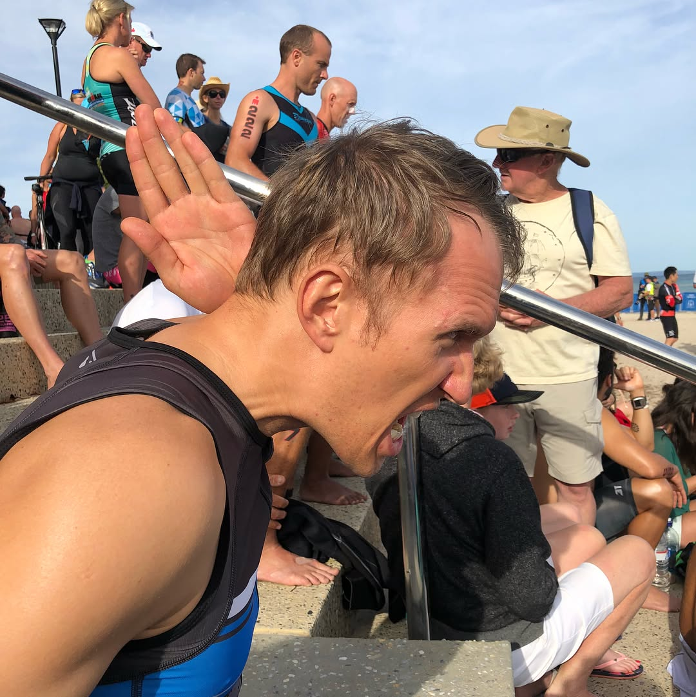

This year Ironman Western Australia was quite unique and challenging. Full IM Race was supposed to start at 7 am, however at 6 am all participants were asked to stay next to their bikes in transition area until further instructions. Later we found that the event helicopter spotted a 2.5m long shark just few hundred meters away from 70.3 IM participants who were half way through their swim 😱😬🦈 it was a bit of a chaos there but the event crew managed it very professionally 👍🏼 Also, today was the hottest day during 1st week of December for the past 20 years. Temperature was 8 degrees higher than the average at this time 😰 it was extremely hard to cycle and run, especially in the forest. My cycling was very good, however I whacked my patellar tendon really badly that negatively affected my run 😕 10:43 overall time for bike and run - definitely room for improvement... — #iromantri #triathlon #marathon #healthyfood #sportnutrition #swimbikerun #dietfood #orbea #cervelo #specializedbikes #giantbikes #canyonbikes #bmcbikes #boardmanbikes #ironmantraining #marathontraining #trailrun #imwesternaustralia #ironmanbusselton #ironmanwesternaustralia2017 #imwesternaustralia2017 #ironmanwa
2017-12-03 22:59:58
Back to main page